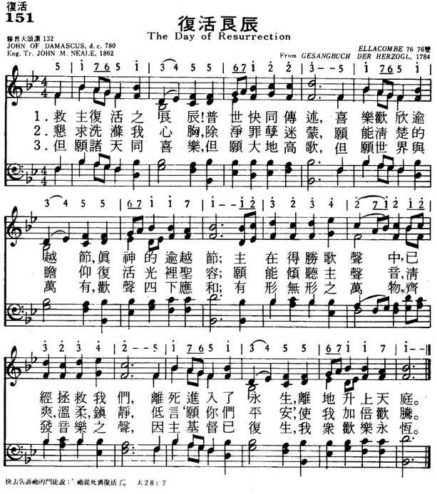
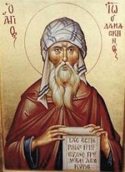
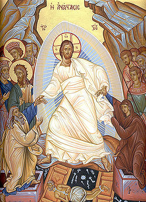

|
|
生命聖詩 - 135 復活良辰 |
|
1 The day of resurrection! 2 Our hearts be pure from evil, 3 Now let the heavens be joyful! United Methodist Hymnal, 1989 |
今日主基督復活，快來傳此信息， 颂主新歌 151复活良辰 |
|
https://www.mred365.cn/szxg/7154.html  https://hymnary.org/hymn/HTLG2017/page/138
|
|
|
|
|


The Day of Resurrection (Tune: Ellacombe - 3vv) https://youtu.be/49hPB6NTVEE -
The Day of Resurrection Hyme Words: John of Damascus Music: Henry Thomas Smart Choir of Gloucester Cathedral https://youtu.be/MgIx_0jhW1Y -
https://youtu.be/bXNf_ftoqRg
| Text: | The Day of Resurrection |
| Author: | John of Damascus, 8th cent. |
| Translator: | John Mason Neale |
| Tune: | LANCASHIRE |
| Composer: | Henry T. Smart |
| Short Name: | St. John of Damascus |
| Full Name: | John of Damascus, Saint |
| Birth Year (est.): | 675 |
| Death Year (est.): | 787 |
Eighth-century Greek poet John of Damascus (b. Damascus, c. 675; d. St. Sabas, near Jerusalem, c. 754)

is especially known for his writing of six canons for the major festivals of the church year. John's father, a Christian, was an important official at the court of the Muslim caliph in Damascus. After his father's death, John assumed that position and lived in wealth and honor. At about the age of forty, however, he became dissatisfied with his life, gave away his possessions, freed his slaves, and entered the monastery of St. Sabas in the desert near Jerusalem. One of the last of the Greek fathers, John became a great theologian in the Eastern church. He defended the church's use of icons, codified the practices of Byzantine chant, and wrote about science, philosophy, and theology.
Bert Polman
| Short Name: | J. M. Neale |
| Full Name: | Neale, J. M. (John Mason), 1818-1866 |
| Birth Year: | 1818 |
| Death Year: | 1866 |
John M. Neale's life is a study in contrasts:

born into an evangelical home, he had sympathies toward Rome; in perpetual ill health, he was incredibly productive; of scholarly temperament, he devoted much time to improving social conditions in his area; often ignored or despised by his contemporaries, he is lauded today for his contributions to the church and hymnody. Neale's gifts came to expression early–he won the Seatonian prize for religious poetry eleven times while a student at Trinity College, Cambridge, England. He was ordained in the Church of England in 1842, but ill health and his strong support of the Oxford Movement kept him from ordinary parish ministry. So Neale spent the years between 1846 and 1866 as a warden of Sackville College in East Grinstead, a retirement home for poor men. There he served the men faithfully and expanded Sackville's ministry to indigent women and orphans. He also founded the Sisterhood of St. Margaret, which became one of the finest English training orders for nurses.
Laboring in relative obscurity, Neale turned out a prodigious number of books and artic1es on liturgy and church history, including A History of the So-Called Jansenist Church of Holland (1858); an account of the Roman Catholic Church of Utrecht and its break from Rome in the 1700s; and his scholarly Essays on Liturgiology and Church History (1863). Neale contributed to church music by writing original hymns, including two volumes of Hymns for Children (1842, 1846), but especially by translating Greek and Latin hymns into English. These translations appeared in Medieval Hymns and Sequences (1851, 1863, 1867), The Hymnal Noted (1852, 1854), Hymns of the Eastern Church (1862), and Hymns Chiefly Medieval (1865). Because a number of Neale's translations were judged unsingable, editors usually amended his work, as evident already in the 1861 edition of Hymns Ancient and Modern; Neale claimed no rights to his texts and was pleased that his translations could contribute to hymnody as the "common property of Christendom."
Bert Polman
This hymn is one of the oldest hymns still sung. Traditionally in the Greek church, the celebration of Christ's resurrection began at the stroke of midnight on Easter Sunday, with the lighting of candles, jubilant greetings, and the singing of this hymn. It was as if the Church could not contain her joy any longer than she had to after the sorrowful contemplation of sin and its consequent suffering through Lent and Holy Week. The text bubbles over with “joy that hath no end” in the victory that Jesus Christ won over sin and death through His resurrection
Notes
Scripture References:
st. 2 = Rev. 1:16, Matt. 28:9
st. 3 = Ps. 19:1, Ps. 150:6, John 16:22
See PHH 389 for information about the origins of this text and John of Damascus.
This text also comes from John's first ode of the "Golden Canon," recognized as his finest work and written around 750. It was traditionally sung at midnight on Easter with the lighting of candles.
John M. Neale's (PHH 342) rather free English translation was published in his Hymns of the Eastern Church (1862). The first stanza uses the Old Testament Passover story as a metaphor for Christ's resurrection (as is customary in all the first odes of a Greek canon). In stanza 2 we, like the New Testament disciples, become witnesses to the risen Lord. Stanza 3 invites the entire cosmos to join in praise to the risen Christ.
Liturgical Use:
Easter, but this marvelous text may be sung any Sunday.
--Psalter Hymnal Handbook, 1988
Text:
The eighth-century Greek Church Father, John of Damascus, is well-known for his long Greek hymns called “canons.” Each canon had nine parts called “odes,” and this hymn is the first ode from the canon for Easter, called the “Golden Canon” or “Queen of Canons.” John Mason Neale translated the three stanzas of this ode into English and published it in his Hymns of the Eastern Church in 1862. The standard text has three stanzas, though a few hymnals add a doxological stanza as a fourth. The first stanza refers to the Passover account in Exodus 15. In the second, we express a desire to see the resurrected Lord. The third stanza is a call to all creation to celebrate the risen Christ.
Tune:
This hymn is most often sung to LANCASHIRE, which was written in 1835 by Henry T. Smart for the 300th anniversary of the Reformation in England. It was originally printed in leaflets with Reginald Heber's text, “From Greenland's Icy Mountains,” for the October 4 celebration service in Blackburn, Lancashire. Many years later, in 1867, Smart published it in his Psalms and Hymns for Divine Worship in London. LANCASHIRE is a strong tune that somewhat resembles a march. For a jubilant text such as this one, use bright tone colors in the accompaniment, such as trumpets or the brighter registers of the organ.
Another well-known tune frequently used for this text is ELLACOMBE, an anonymous tune with German Roman Catholic origins. A tune with some resemblance to our modern one was published in 1784 in a chapel hymnal for the Duke of Württemberg. Various German hymnals published other variants during the early nineteenth century. The Vollständige Sammlung der gewöhnlichen Melodien zum Mainzer Gesangbuche, published in Mainz in 1833, has a version much closer to the modern one. This tune reached the English-speaking world through the 1868 appendix to Hymns Ancient and Modern, in an arrangement by W. H. Monk. ELLACOMBE is the name of a village in Devonshire, England, but any connection between the village and the tune is unknown. This tune is joyful and buoyant, and works well when sung in harmony.
When/Why/How:
Though this splendid hymn could be sung any Sunday, it is best suited to Easter Sunday, especially as a prelude or opening hymn. As a prelude on Easter Sunday, try an organ and handbell arrangement, such as "Festival Prelude on LANCASHIRE," which combines that hymn tune and Eugène Gigout's "Grand Choeur Dialogué." For the opening hymn, the joy of the Resurrection almost demands full participation by the choir, congregation, and accompanying instruments. A grand setting of “The Day of Resurrection” to the tune LANCASHIRE is for choir and congregation, accompanied by organ, brass, and timpani, with optional cymbals. The fourth stanza is a majestic doxology. A concertato arrangement of ELLACOMBE for “The Day of Resurrection” features brass and organ accompaniment for choral and congregational singing.
Tiffany Shomsky,
Hymnary.org
Tune Information
| Title: | LANCASHIRE |
| Composer: | Henry Thomas Smart (1836) |
| Meter: | 7.6.7.6 D |
| Incipit: | 55346 53114 56255 |
| Key: | C Major |
| Copyright: | Public Domain |
| Short Name: | Henry Thomas Smart |
| Full Name: | Smart, Henry Thomas, 1813-1879 |
| Birth Year: | 1813 |
| Death Year: | 1879 |
Henry Smart (b. Marylebone, London, England, 1813; d. Hampstead, London, 1879),

a capable composer of church music who wrote some very fine hymn tunes (REGENT SQUARE, 354, is the best-known).
Smart gave up a career in the legal profession for one in music. Although largely self taught, he became proficient in organ playing and composition, and he was a music teacher and critic. Organist in a number of London churches, including St. Luke's, Old Street (1844-1864), and St. Pancras (1864-1869), Smart was famous for his extemporizations and for his accompaniment of congregational singing. He became completely blind at the age of fifty-two, but his remarkable memory enabled him to continue playing the organ. Fascinated by organs as a youth, Smart designed organs for important places such as St. Andrew Hall in Glasgow and the Town Hall in Leeds. He composed an opera, oratorios, part-songs, some instrumental music, and many hymn tunes, as well as a large number of works for organ and choir. He edited the Choralebook (1858), the English Presbyterian Psalms and Hymns for Divine Worship (1867), and the Scottish Presbyterian Hymnal (1875). Some of his hymn tunes were first published in Hymns Ancient and Modern (1861).
Bert Polman
Notes
Henry T. Smart (PHH
233) composed the tune in 1835 for use at a missions festival at
Blackburn, Lancashire, England. For that festival, which celebrated the
three-hundredth anniversary of the Reformation in England, the tune was
set to Reginald Heber's (PHH
249) “From Greenland's Icy Mountains.” First printed in leaflets,
LANCASHIRE was published In Smart's Psalms and Hymns
for Divine Worship (1867). It was set to Shurtleffs
text in the 1905 Methodist Hymnal. In some
hymnals this tune is associated with "The Day of
Resurrection" (390).
Initially cast over a static bass, LANCASHIRE becomes quite animated in its third phrase. Sing and accompany with much energy and rhythmic vitality.
--Psalter Hymnal Handbook, 1988
Tune Information
| Title: | ELLACOMBE |
| Meter: | 7.6.7.6 D |
| Incipit: | 51765 13455 67122 |
| Key: | A Major |
| Source: | Gesangbuch der Herzogl. Hofkapelle, Würtemberg, 1784 |
| Copyright: | Public Domain |
Notes
Published in a chapel hymnal for the Duke of Würtemberg (Gesangbuch der Herzogl, 1784), ELLACOMBE (the name of a village in Devonshire, England) was first set to the words "Ave Maria, klarer und lichter Morgenstern." During the first half of the nineteenth century various German hymnals altered the tune. Since ELLACOMBE's inclusion in the 1868 Appendix to Hymns Ancient and Modern, where it was set to John Daniell's children's hymn "Come, Sing with Holy Gladness," its use throughout the English-speaking world has spread.
ELLACOMBE is a rounded bar form (AABA), rather cheerful in character, and easily sung in harmony. Try having a soloist sing the story in stanzas 1 and 2, with the children (or entire congregation) joining in on stanza 3.
--Psalter Hymnal Handbook, 1998
简介（一） （来源：《岁首到年终》）
复活良辰 The Day of Resurrection John of Damascus, early 8th Century 《岁首到年终》
使我认识基督，晓得祂复活的大能，并且晓得和祂一同受苦，效法祂的死。或者我也得以从死里复活。（腓 3:10）
基督的复活彰显了三方面的能力，首先是祂的复活败坏了掌死权的恶魔，使人不再在死亡的威吓之下，因此神复活的能力大于死亡的能力。其次，死亡是绝望的，没有生机可言，可是复活的大能却完全扭转这劣境，它带给了人类新的可能性和新的自由，叫人在绝望中得到盼望，还有是生命蜕变的能力，在复活的过程中，耶稣的生命形态由必死，能朽坏的肉身形态，改变成为不朽坏，超越时空的形态，这是何等奇妙与伟大！[dropdown_box expand_text=”全文” show_more=”显示” show_less=”隐藏” start=”hide”]因此，福音使基督死里复活的能力，基督徒的生命得到更新， 在神面前有新的地位，我们可以有得胜的力量，盼望的力量，并生命改变的力量，因为在基督里一切都是新的，赞美主！
这首「复活良辰」从第八世纪至今，是一古老又受信徒深爱的歌。首节述说复活的意义，次节提醒信徒在复活节中灵性应有的准备，最后以万世欢腾作为结束。 John Mason Neale 将本诗从希腊文译为英文，称它是一首「古老的凯旋荣歌」。
作者 John of Damascus 的家庭原来富裕，以其家学渊源并且身居显职，自然不难当了 Damascus 地方的高官，但荣誉名利临到他身上，他却不能满足心灵深处的饥渴，因此弃绝名利毅然进入修道院，专攻神学，不久成为希腊教会中最重要的神学大师。约在 754 与 787 年间离世。
1 救主复活之良辰！普世快同传述，喜乐欢欣逾越节，真神的逾越节；
主在得胜歌声中，已经拯救我们，离死进入了永生，离地升上天庭。
2 恳求洗涤我心胸，除净罪孽迷蒙，愿能清楚的瞻仰复活光里圣容；
愿能倾听主声音，清爽、温柔、镇静、低言「愿你们平安」，使我加倍欢腾。
3 但愿诸天同喜乐，但愿大地高歌，但愿世界与万有，欢声四下应和；
有形无形之万物，齐发音乐之声，因主基督已复生，我众欢乐永�琚C
＊基督的死不但是祂对于神的顺服，也是祂爱教会的一种表现。── 王明道
https://www.xueshengshi.com/?p=1709
是否困倦 Art Thou Weary? 大馬士革的聖約翰（St. John of Damascus, 696-754）
問你是否困倦疲乏，勞苦又愁煩？
主聲說道：「到我這�堥犮郎w。」
倘若祂來做我嚮導，憑何能識認？
“祂的肋旁，手上，腳上，滿傷痕。”
祂是否像榮耀君王，頭上戴冠冕？
“祂確戴著一頂冠冕，荊棘編。”
倘我尋祂，倘我跟祂，祂給何報酬？
“許多苦楚，許多辛勞，許多愁。”
倘若我仍緊緊隨祂，終久又何如？
“渡過約但，愁苦消除，永安舒。”
我若歸依求祂收留，祂是否接受？
“天地雖廢，祂不推辭，總收留。”
追尋，跟隨，遵守，奮鬥，我能否蒙恩？
使徒，先知，烈士，聖徒都說“能”。
 (請點耳機收聽)
(請點耳機收聽)
許多時候，我們的身心靈都因試煉而感到困倦，尤其是被眾人所棄、孤單
無助的時刻，真有寸步難行之感。 凡勞苦擔重擔者，到主那�堙A可享安息
（太11:28）。
這是一首希臘教會著名的聖詩。 主後五百多年，有一群虔敬的修道士在耶路撒冷附近的山巖森林中，建造了一座馬薩巴（Mar Saba）修道院，
其中有一位是希臘教會的歌曲家柯斯麥（Cosmas the Melodist）。 有一次柯斯麥被回教徒擄去為奴，最後要將他處死，臨刑前，柯斯麥悲嘆自己的滿腹經綸將就此埋於地下。
當時有一位富商在場，他要求回教總督，容他出資贖柯斯麥，將他帶回家，做他兒子約翰的家庭教師。 柯斯麥待約翰情同父子，罄其所學相授。 數年後，柯斯麥返回修道院。
不久，約翰放棄財富地位，追隨柯斯麥隱居修道院攻讀神學。 約翰著作了一本偉大的神學論著「智慧之源」，他引用希臘的思想家亞里斯多德（Aristotle）和柏拉圖（Plato）的思想來論證神的存在。
在教會史上，他被稱為大馬士革的聖約翰（St. John of Damascus,
696-754），他是東正教的最後一位神父，也是希臘教會中最重要的神學家和詩人，他最著名的聖樂是「復活節大樂章」（Easter
Canon）。 著名的聖詩「復活良辰」（The Day of
Resurrection）即是其中之一章。
當約翰退隱修道院時，他帶了一個十多歲的姪兒司提反（St. Stephen, the
Sabaite,725-794）同行。司提反在叔父和柯斯麥的訓練栽培下，作了許多感人的聖詩，本詩即是其名詩歌之一。 790年，他成為該修道院的主持人。
這首詩是靈程經過千錘百煉的記錄，有主觀的經歷和客觀的聖經根據。 當年希臘聖詩由會眾和詩班對唱，詩班唱問句，會眾唱答句。
本詩每一節都以經文為答句的依據：
第一節：馬太福音11：28-30。
第二節：約翰福音20:24-28，多馬摸主釋疑。
第三節：約翰福音19:2-3，兵丁以荊棘冠冕戲弄耶穌。
第四節：路加福音9:58及約翰福音16;20,33。
第五節：約翰福音14:1-3,6。
第六節：馬可福音13:31。
第七節：啟示錄7:14,16,17，希伯來書12:1-2。
這首詩的中文譯自倪約翰（John M. Neale,1818-1866）的英譯。 本詩共有四個曲調，最常用的是英國聖公會牧師薄林格（E. W.
Bullinger, 1837-1913）的曲譜 。
中英文聖詩集參考
英文歌名 Art
Thou Weary?
頌主新歌 302
頌主新歌(中英雙語) 316
生命聖詩 195
聖徒詩集 492
聖詩 75
台語聖詩 196
頌主聖詩 339
讚美詩(新編) 305
青年聖歌I 22
校園詩歌I 105
http://www.hymncompanions.org/Sep/22/stream.php
John of Damascus Eighth-century Greek poet
{kind=link}
John of Damascus (Greek: Ἰωάννης ὁ Δαμασκηνός, romanized: Ioánnēs ho Damaskēnós, IPA: [ioˈanis o ðamasciˈnos]; Latin: Ioannes Damascenus; Arabic: يوحنا الدمشقي, romanized: Yūḥannā ad-Dimashqī) or John Damascene was a Christian monk, priest, hymnographer, and apologist. Born and raised in Damascus c. 675 or 676; the precise date and place of his death is not known, though tradition places it at his monastery, Mar Saba, near Jerusalem on 4 December 749.[5]
A polymath whose fields of interest and contribution included law, theology, philosophy, and music, he was given the by-name of Chrysorrhoas (Χρυσορρόας, literally "streaming with gold", i.e. "the golden speaker"). He wrote works expounding the Christian faith, and composed hymns which are still used both liturgically in Eastern Christian practice throughout the world as well as in western Lutheranism at Easter.[6]
He is one of the Fathers of the Eastern Orthodox Church and is best known for his strong defence of icons.[7] The Catholic Church regards him as a Doctor of the Church, often referred to as the Doctor of the Assumption due to his writings on the Assumption of Mary.[8] He was also a prominent exponent of perichoresis, and employed the concept as a technical term to describe both the interpenetration of the divine and human natures of Christ and the relationship between the hypostases of the Trinity.[9] John is at the end of the Patristic period of dogmatic development, and his contribution less that of theological innovation than that of a summary of the developments of the centuries before him. In Catholic theology, he is therefore known as the "last of the Greek Fathers".[10]
The main source of information for the life of John of Damascus is a work attributed to one John of Jerusalem, identified therein as the Patriarch of Jerusalem.[11] This is an excerpted translation into Greek of an earlier Arabic text. The Arabic original contains a prologue not found in most other translations, and was written by an Arab monk, Michael, who explained that he decided to write his biography in 1084 because none was available in his day. However, the main Arabic text seems to have been written by an earlier author sometime between the early 9th and late 10th century.[11] Written from a hagiographical point of view and prone to exaggeration and some legendary details, it is not the best historical source for his life, but is widely reproduced and considered to contain elements of some value.[12] The hagiographic novel Barlaam and Josaphat, is a work of the 10th century[13] attributed to a monk named John. It was only considerably later that the tradition arose that this was John of Damascus, but most scholars no longer accept this attribution. Instead much evidence points to Euthymius of Athos, a Georgian who died in 1028.[14]
Family background[edit]
John was born in Damascus, in 675 or 676, to a prominent Damascene Christian Arab family.[15][16] His father, Sarjun ibn Mansur, served as an official of the early Umayyad Caliphate. Sarjun (Sergius) was himself the son of a prominent Byzantine official of Damascus, Mansur ibn Sarjun, who had been responsible for the taxes of the region during the reign of Emperor Heraclius.[17][18] Mansur seems to have played a role in the capitulation of Damascus to the troops of Khalid ibn al-Walid in 635 after securing favorable conditions of surrender.[17][18] Eutychius, a 10th-century Melkite patriarch, mentions him as one high-ranking official involved in the surrender of the city to the Muslims.[19]
The tribal background of Mansur ibn Sarjun, John's grandfather, is unknown, but biographer Daniel Sahas has speculated that the name Mansur could have implied descent from the Arab Christian tribes of Kalb or Taghlib.[20] The name was common among Syrian Christians of Arab origins, and Eutychius noted that the governor of Damascus, who was likely Mansur ibn Sarjun, was an Arab.[20] However, Sahas also asserts that the name does not necessarily imply an Arab background and could have been used by non-Arab, Semitic Syrians.[20] While Sahas and biographers F. H. Chase and Andrew Louth assert that Mansūr was an Arabic name, Raymond le Coz asserts that the "family was without doubt of Syrian origin";[21] indeed, according to historian Daniel J. Janosik, "Both aspects could be true, for if his family ancestry were indeed Syrian, his grandfather [Mansur] could have been given an Arabic name when the Arabs took over the government."[22] When Syria was conquered by the Muslim Arabs in the 630s, the court at Damascus retained its large complement of Christian civil servants, John's grandfather among them.[17][19] John's father, Sarjun (Sergius), went on to serve the Umayyad caliphs.[17] According to John of Jerusalem and some later versions of his life, after his father's death, John also served as an official to the caliphal court before leaving to become a monk. This claim, that John actually served in a Muslim court, has been questioned since he is never mentioned in Muslim sources, which however do refer to his father Sarjun (Sergius) as a secretary in the caliphal administration.[23] In addition, John's own writings never refer to any experience in a Muslim court. It is believed that John became a monk at Mar Saba, and that he was ordained as a priest in 735.[17][24]
Biography[edit]
.gif){kind=link}
{kind=link}
John was raised in Damascus, and Arab Christian folklore holds that during his adolescence, John associated with the future Umayyad caliph Yazid I and the Taghlibi Christian court poet al-Akhtal.[25]
One of the vitae describes his father's desire for him to "learn not only the books of the Muslims, but those of the Greeks as well." From this it has been suggested that John may have grown up bilingual.[26] John does indeed show some knowledge of the Quran, which he criticizes harshly.[27] (See Christianity and Islam.)
Other sources describe his education in Damascus as having been conducted in accordance with the principles of Hellenic education, termed "secular" by one source and "classical Christian" by another.[28][29] One account identifies his tutor as a monk by the name of Cosmas, who had been kidnapped by Arabs from his home in Sicily, and for whom John's father paid a great price.
Under the instruction of Cosmas, who also taught John's orphan friend, Cosmas of Maiuma, John is said to have made great advances[clarification needed] in music, astronomy and theology, soon rivalling Pythagoras in arithmetic and Euclid in geometry.[29] As a refugee from Italy, Cosmas brought with him the scholarly traditions of Latin Christianity.
John possibly had a career as a civil servant for the Caliph in Damascus before his ordination.[30]
He then became a priest and monk at the Mar Saba monastery near Jerusalem. One source suggests John left Damascus to become a monk around 706, when al-Walid I increased the Islamicisation of the Caliphate's administration.[31] This is uncertain, as Muslim sources only mention that his father Sarjun (Sergius) left the administration around this time, and fail to name John at all.[23] During the next two decades, culminating in the Siege of Constantinople (717-718), the Umayyad Caliphate progressively occupied the borderlands of the Byzantine Empire. An editor of John's works, Father Le Quien, has shown that John was already a monk at Mar Saba before the dispute over iconoclasm, explained below.[32]
In the early 8th century, iconoclasm, a movement opposed to the veneration of icons, gained acceptance in the Byzantine court. In 726, despite the protests of Germanus, Patriarch of Constantinople, Emperor Leo III (who had forced his predecessor, Theodosius III, to abdicate and himself assumed the throne in 717 immediately before the great siege) issued his first edict against the veneration of images and their exhibition in public places.[33]
All agree that John of Damascus undertook a spirited defence of holy images in three separate publications. The earliest of these works, his Apologetic Treatises against those Decrying the Holy Images, secured his reputation. He not only attacked the Byzantine emperor, but adopted a simplified style that allowed the controversy to be followed by the common people, stirring rebellion among the iconoclasts. Decades after his death, John's writings would play an important role during the Second Council of Nicaea (787), which convened to settle the icon dispute.[34]
John's biography recounts at least one episode deemed improbable or legendary.[32][35] Leo III reportedly sent forged documents to the caliph which implicated John in a plot to attack Damascus. The caliph then ordered John's right hand be cut off and hung up in public view. Some days afterwards, John asked for the restitution of his hand, and prayed fervently to the Theotokos before her icon: thereupon, his hand is said to have been miraculously restored.[32] In gratitude for this miraculous healing, he attached a silver hand to the icon, which thereafter became known as the "Three-handed", or Tricheirousa.[36] That icon is now located in the Hilandar monastery of the Holy Mountain.
Veneration[edit]
When the name of John of Damascus was inserted in the General Roman Calendar in 1890, it was assigned to 27 March. The feast day was moved in 1969 to the day of John's death, 4 December, the day on which his feast day is celebrated also in the Byzantine Rite calendar,[37] Lutheran Commemorations,[38] and the Anglican Communion and Episcopal Church.[39]
John of Damascus is remembered in the Church of England with a commemoration on 4 December.[40]
The 1884 choral work John of Damascus ("A Russian Requiem"), Op. 1, for four-part mixed chorus and orchestra, by Russian composer Sergei Taneyev, is dedicated to Saint John.[41]
In 1890, he was declared a Doctor of the Church by Pope Leo XIII.
List of works[edit]
Besides his purely textual works, many of which are listed below, John of Damascus also composed hymns, perfecting the canon, a structured hymn form used in Byzantine Rite liturgies.[42]
Early works[edit]
- Three Apologetic Treatises against those Decrying the Holy Images – These treatises were among his earliest expositions in response to the edict by the Byzantine Emperor Leo III, banning the veneration or exhibition of holy images.[43]
Teachings and dogmatic works[edit]
-
Fountain of Knowledge or The
Fountain of Wisdom, is divided into three parts:
- Philosophical Chapters (Kefálea filosofiká) – commonly called "Dialectic", it deals mostly with logic, its primary purpose being to prepare the reader for a better understanding of the rest of the book.
- Concerning Heresy (Perì eréseon) – the last chapter of this part (Chapter 101) deals with the Heresy of the Ishmaelites.[44] Unlike earlier sections devoted to other heresies, which are disposed of succinctly in just a few lines, this chapter runs into several pages. It constitutes one of the first Christian refutations of Islam. One of the most dominant translations is his polemical work Peri haireseon translated from Greek into Latin. His manuscript is one of the first Orthodox Christian refutations of Islam which has influenced the Western Catholic Church's attitude. It was among the first sources representing the Prophet of Islam Muhammad to the West as "false prophet," and "Antichrist."[45]
- An Exact Exposition of the Orthodox Faith (Ékdosis akribès tēs Orthodóxou Písteōs) – a summary of the dogmatic writings of the Early Church Fathers. This writing was the first work of systematic theology in Eastern Christianity and an important influence on later Scholastic works.[46]
- Against the Jacobites
- Against the Nestorians
- Dialogue against the Manichees
- Elementary Introduction into Dogmas
- Letter on the Thrice-Holy Hymn
- On Right Thinking
- On the Faith, Against the Nestorians
- On the Two Wills in Christ (Against the Monothelites)
- Sacred Parallels (dubious)
- Octoechos (the church's liturgical book of eight tones)
- On Dragons and Ghosts
Teaching on Islam[edit]
As stated above, in the final chapter of Concerning Heresy, John mentions Islam as the Heresy of the Ishmaelites. He is one of the first known Christian critics of Islam. John claims that Muslims were once worshipers of Aphrodite who followed after Mohammad because of his "seeming show of piety," and that Mohammad himself read the Bible and, "likewise, it seems," spoke to an Arian monk that taught him Arianism instead of Christianity. John also claims to have read the Quran, or at least parts of it, as he criticizes the Quran for saying that the Virgin Mary was the sister of Moses and Aaron and that Jesus was not crucified but brought alive into heaven. John further claims to have spoken to Muslims about Mohammad. He uses the plural "we", whether in reference to himself, or to a group of Christians that he belonged to who spoke to the Muslims, or in reference to Christians in general.[47]
Regardless, John claims that he asked the Muslims what witnesses can testify that Mohammad received the Quran from God – since, John says, Moses received the Torah from God in the presence of the Israelites, and since Islamic law mandates that a Muslim can only marry and do trade in the presence of witnesses – and what biblical prophets and verses foretold Mohammad's coming – since, John says, Jesus was foretold by the prophets and whole Old Testament. John claims that the Muslims answered that Mohammad received the Quran in his sleep. John claims that he jokingly answered, "You're spinning my dreams."[47]
Some of the Muslims, John says, claimed that the Old Testament that Christians believe foretells Jesus' coming is misinterpreted, while other Muslims claimed that the Jews edited the Old Testament so as to deceive Christians (possibly into believing Jesus is God, but John does not say).[47]
While recounting his alleged dialogue with Muslims, John claims that they have accused him of idol worship for venerating the Cross and worshipping Jesus. John claims that he told the Muslims that the black stone in Mecca was the head of a statue of Aphrodite. Moreover, he claims, the Muslims were wrong not to associate Jesus with God if Jesus is the Word of God. John claims that, if Jesus is the Word of God, and the Word of God has always existed with God, then the Word must be a part of God, and therefore be God himself, whereby, John says, it would be wrong for Muslims to call Jesus the Word of God but not God himself.[47]
John ends the chapter quickly by claiming that Islam permits polygamy, that Mohammad committed adultery with a companion's wife before outlawing adultery, and that the Quran is filled with ridiculous stories, such as the She-Camel of God and God giving Jesus an "incorruptible table."[47]
Arabic translation[edit]
{kind=link}
It is believed that the homily on the Annunciation was the first work to be translated into Arabic. Much of this text is found in Manuscript 4226 of the Library of Strasbourg (France), dating to 885 AD.[48]
Later in the 10th century, Antony, superior of the monastery of St. Simon (near Antioch) translated a corpus of John Damascene. In his introduction to John's work, Sylvestre patriarch of Antioch (1724–1766) said that Antony was monk at Saint Saba. This could be a misunderstanding of the title Superior of Saint Simon probably because Saint Simon's monastery was in ruins in the 18th century.[49]
Most manuscripts give the text of the letter to Cosmas,[50] the philosophical chapters,[51] the theological chapters and five other small works.[52]
In 1085, Mikhael, a monk from Antioch, wrote the Arabic life of the Chrysorrhoas.[53] This work was first edited by Bacha in 1912 and then translated into many languages (German, Russian and English).
Modern English translations[edit]
- On holy images; followed by three sermons on the Assumption, translated by Mary H. Allies, (London: Thomas Baker, 1898)
- Exposition of the Orthodox faith, translated by the Reverend SDF Salmond, in Select Library of Nicene and Post-Nicene Fathers. 2nd Series vol 9. (Oxford: Parker, 1899) [reprint Grand Rapids, MI: Eerdmans, 1963.]
- Writings, translated by Frederic H. Chase. Fathers of the Church vol 37, (Washington, DC: Catholic University of America Press, 1958) [ET of The fount of knowledge; On heresies; The orthodox faith]
- Daniel J. Sahas (ed.), John of Damascus on Islam: The "Heresy of the Ishmaelites", (Leiden: Brill, 1972)
- On the divine images: the apologies against those who attack the divine images, translated by David Anderson, (New York: St. Vladimir's Seminary Press, 1980)
- Three Treatises on the Divine Images. Popular Patristics. Translated by Andrew Louth. Crestwood, NY: St. Vladimir's Seminary Press. 2003. ISBN 978-0-88141-245-1. Louth, who also wrote the introduction, was at the University of Durham as Professor of Patristics and Byzantine Studies.
Two translations exist of the 10th-century hagiographic novel Barlaam and Josaphat, traditionally attributed to John:
- Barlaam and Ioasaph, with an English translation by G.R. Woodward and H. Mattingly, (London: Heinemann, 1914)
- The precious pearl: the lives of Saints Barlaam and Ioasaph, notes and comments by Augoustinos N Kantiotes; preface, introduction, and new translation by Asterios Gerostergios, et al., (Belmont, MA: Institute for Byzantine and Modern Greek Studies, 1997)
See also
https://en.wikipedia.org/wiki/John_of_Damascus
復活節（Pascha）[編輯]
| 復活節 | |
|---|---|
|
 |
|
| 類型 | 基督教、文化節日 |
| 意義 | 慶祝耶穌基督復活 |
| 活動 | 教堂儀式、家庭聚餐、復活節蛋裝飾與互送禮物 |
| 風俗 | 禱告、復活節守夜禮、日出服務 |
| 日期 | 根據復活節的計算 |
.jpg){kind=link}
| 年份 | 天主教、新教 | 東正教 |
|---|---|---|
| 2010年 | 4月4日 | |
| 2011年 | 4月24日 | |
| 2012年 | 4月8日 | 4月15日 |
| 2013年 | 3月31日 | 5月5日 |
| 2014年 | 4月20日 | |
| 2015年 | 4月5日 | 4月12日 |
| 2016年 | 3月27日 | 5月1日 |
| 2017年 | 4月16日 | |
| 2018年 | 4月1日 | 4月8日 |
| 2019年 | 4月21日 | 4月28日 |
| 2020年 | 4月12日 | 4月19日 |
復活節（拉丁語：Pascha），又稱主復活日，是基督宗教的重要節日之一，最初與猶太人的逾越節同日，但教會在4世紀第一次尼西亞公會議決議不用猶太曆，於是改定為每年春分月圓之後第一個星期日。該節日乃紀念耶穌基督於公元30/33年被釘死後第三天復活的事蹟，是基督信仰的高峰，因此被基督徒認為象徵得著永生與赦罪；不過現今許多與復活節相關的民間風俗，都不起源於基督宗教。
名稱來源[編輯]
復活節名稱乃自教會拉丁語的「Pascha」轉換而來（由於pascua（nourriture，食物）一詞的影響，從pascere（paître，餵食、放養）這個拉丁動詞裡來的），原本是從希臘語裡的πάσχα（páskha）借用而來，而這個希臘詞本身則是從希伯來語פסח（Pessa'h，超越[par-dessus由…之上]）裡借用的，源自passage（過路/道），即指猶太人的逾越節，這詞同時含有紀念當年以色列人出埃及的意義。根據聖經福音記載，在這個猶太節期間，耶穌基督復活了；這是為什麼這個名稱被用在基督徒的節日上。
根據《牛津詞典》和其他一些文章（比如Francis X. Weiser的「Handbook of Christian Feasts and Customs」），英文Easter這個字與猶太人的逾越節這個字有關，這不僅因為耶穌就是逾越節的羔羊，而且在時間上耶穌基督的復活和逾越節也吻合。在很多歐洲的語言裡，不僅逾越節的筵席曾稱為Easter，而且早期英文聖經譯本中用Easter譯逾越節。
現在公認的理論認為，Easter 一詞與德語 Oster, 荷蘭語 ooster 等詞同源，來自於古英國女神 Ēostre。四月本是以該女神命名的月份，而在這個月份，人們舉行相應的宴會與慶祝活動。後來歐洲基督教盛行之後，傳統的節日就被冠以了與基督教相關的典故，這與聖誕節類似。
計算方法[編輯]
早期的基督教會，按照耶穌使徒的傳統，在猶太人的逾越節當日，即猶太曆尼散月14日，紀念耶穌的受難和復活，以示耶穌是逾越節的羔羊（哥林多前書5:7）。然而，西方包括羅馬在內的教會，以耶穌在星期日復活為理由，改在逾越節後的星期日紀念耶穌復活。各地教會對復活節日期爭論長逾一世紀，結果拋棄了依照猶太曆法在逾越節紀念的使徒傳統，而由教會自行計算每年復活節的日子。
羅馬皇帝君士坦丁一世在公元325年召開第一次尼西亞公會議，訂明了各地統一復活節日期、及不用猶太曆法定出。復活節是星期日，因星期日被教會視作為耶穌死而復活的日子，所以復活節就在每年春分月圓後第一個星期日舉行。
復活節會在每年春分月圓之後第一個星期日舉行，因為春分之後北半球便開始日長夜短——光明大過黑暗，月圓的時候，不但在日間充滿光明，就連漆黑的夜晚也被光輝（月光）照耀。
此後每年3月21日當日或之後，出現月圓後的第一個星期日，就是復活節，然而計算復活節的方法，自古以來均十分複雜，拉丁文Computus（計算）一字更專指計算復活節的方法，而羅馬教會及東正教會用不同曆法計算，令東西方復活節可在不同日子出現。教會復活節日期有時與天文觀測的不同，例如：2019年按照天文的復活節應是3月24日，但是西方教會復活節是4月21日，東方教會是4月28日。
1997年，普世教會協會在敘利亞召開會議時，曾建議改革計算復活節的方式，並建議統一東、西教會的復活節，但至今絕大部分基督教宗派仍沒有跟隨。
民間風俗[編輯]
{kind=link}
在西方，與復活節相關的物品有復活節兔和復活節彩蛋。傳說復活節彩蛋是復活節兔發送的，有些人喜歡在蛋上畫各種各樣的鬼臉或花紋。而這些民間風俗都不是起源於基督宗教的。
美索不達米亞的早期基督教把蛋染紅以紀念耶穌基督在所流的寶血[3]。
復活節亦有吃火腿和十字包(Hot cross bun)[4]的習慣及在復活節前四十日禁食紀念[5]，隨後演變成基督宗教的大齋期或四旬期(Lent)。
在芬蘭復活節期間有吃曼米的習慣。該習俗源自早期天主教會禁食在復活節時結束，其時可以開始享受美食，但聖週五是個神聖的日子，其時不可生火和做飯，所以那個時候就吃冷的易於保存的食物，諸如曼米[6]。
復活節島[編輯]
荷蘭人雅可布·羅赫芬率領的一支艦隊，在1772年發現南太平洋的智利以西外海有一個島嶼。因發現該島這一天正好是復活節，洛加文在航海圖上記下此島位置及在旁邊記下「復活節島」。直至1774年，英國探險家詹姆斯·庫克船長再次找到該島。當今的人類學界多根據當地的語言稱此島為拉帕努伊島(Rapa Nui)，這是1860年代來自大溪地的玻里尼西亞勞工對它的稱呼。
https://zh.wikipedia.org/wiki/%E5%BE%A9%E6%B4%BB%E7%AF%80